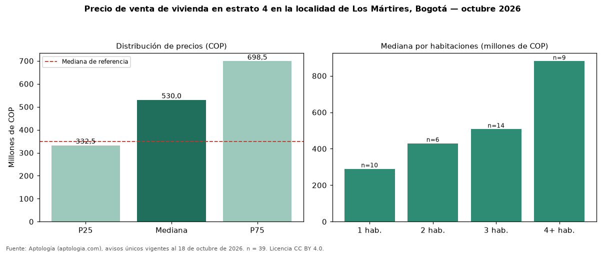

Precio de venta de vivienda en estrato 4 en la localidad de Los Mártires, Bogotá — octubre 2026
En la localidad de Los Mártires, Bogotá, la mediana de precio de venta de vivienda en estrato 4 es COP 530 millones (n = 39 avisos únicos). Frente a toda la oferta de venta en la localidad de Los Mártires, Bogotá (COP 350 millones), la diferencia es de 51 % por encima. En todo Bogotá, la misma combinación tiene mediana COP 660 millones (−20 %). Por metro cuadrado, la mediana es COP 6.442.308/m² (+1 % frente a COP 6.365.683/m²), puesto 6 de 11 localidades comparables. El rango intercuartílico va de COP 332 millones a COP 698 millones (razón 2,1). Por habitaciones: 1 habitación, COP 290 millones (n = 10); 2 habitaciones, COP 430 millones (n = 6); 3 habitaciones, COP 508 millones (n = 14); 4 o más habitaciones, COP 880 millones (n = 9). El área mediana es 74 m² (referencia: 54 m²). Datos abiertos CC BY 4.0 de Aptología; fuente y búsqueda de inmuebles: https://www.aptologia.com/venta/bogota/los-martires. Archivos: PDF de 2 páginas, CSV con las cifras y gráfica PNG.

| Avisos únicos | 39 |
|---|---|
| Percentil 25 | COP 332.500.000 |
| Mediana | COP 530.000.000 |
| Percentil 75 | COP 698.500.000 |
| Mediana por m² | COP 6.442.307 |
Fuente: avisos vigentes de portales inmobiliarios recopilados por Aptología, deduplicados (mínimo 30 avisos únicos por celda). Precios pedidos, no cerrados. Fecha: 2026-10-18.